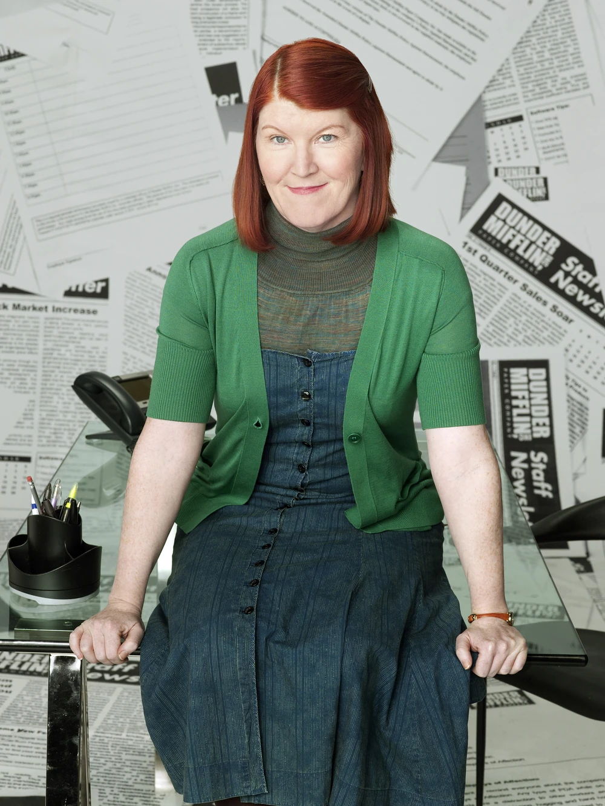
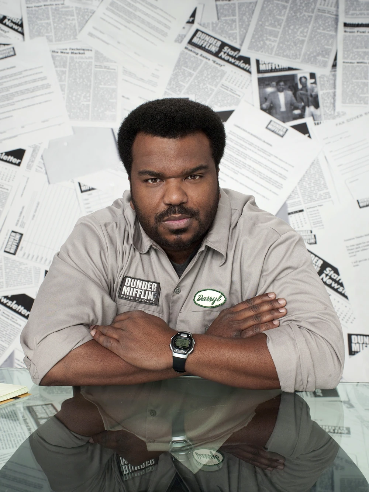
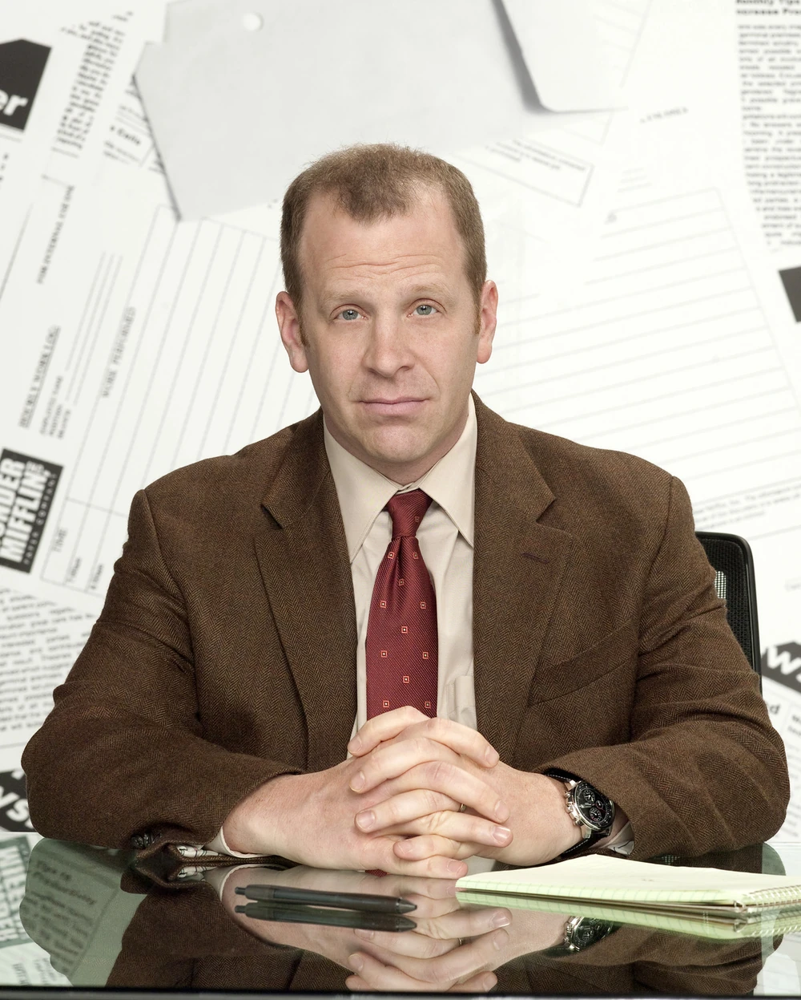

Phyllis es una de las representantes de ventas de Dunder Mifflin y una de las empleadas con más antigüedad de la sucursal de Scranton. Se caracteriza por su personalidad tranquila, amable y reservada, aunque en ocasiones demuestra tener un carácter más firme y competitivo de lo que aparenta. Está casada con Bob Vance, propietario de Vance Refrigeration, y mantiene una relación cercana con algunos de sus compañeros. Su presencia aporta situaciones cotidianas y momentos de humor inesperado.

Meredith Palmer
Kate Flannery
Temporadas 1 a 9
Meredith trabaja en el área de relaciones con proveedores y se destaca por su personalidad despreocupada, directa y poco convencional. Es conocida por sus comentarios sin filtro, su comportamiento impulsivo y sus hábitos bastante cuestionables, que suelen generar situaciones incómodas y cómicas dentro de la oficina. Aunque muchas veces parece desinteresada por las normas laborales, forma parte del particular grupo de empleados que caracteriza a Dunder Mifflin.
Creed Bratton
Creed Bratton
Temporadas 1 a 9
Creed es el empleado encargado del control de calidad en Dunder Mifflin. Es uno de los personajes más misteriosos e impredecibles de la serie, ya que constantemente hace comentarios extraños, cuenta historias difíciles de creer y parece tener un pasado lleno de experiencias insólitas. Su actitud despreocupada y su particular manera de relacionarse con los demás lo convierten en una fuente constante de humor absurdo. A pesar de su escasa participación en las actividades de la oficina, logra mantenerse como uno de sus empleados más peculiares.

Darryl Philbin
Craig Robinson
Temporadas 1 a 9
Darryl trabaja inicialmente en el depósito de Dunder Mifflin y, con el tiempo, consigue ascender dentro de la empresa hasta ocupar un puesto administrativo. Se caracteriza por su personalidad práctica, inteligente y sarcástica, y suele demostrar mayor sentido común que muchos de sus compañeros. Su relación con Michael genera numerosas situaciones cómicas, especialmente por sus diferencias de personalidad y sus intentos de mantener cierta distancia profesional. A lo largo de la serie también desarrolla nuevas aspiraciones personales y laborales.

Toby Flenderson
Paul Lieberstein
Temporadas 1 a 9
Toby es el representante de Recursos Humanos de la sucursal de Scranton y uno de los empleados que más conflictos tiene con Michael, quien lo considera un obstáculo para su particular manera de dirigir la oficina. Se caracteriza por su personalidad tranquila, introvertida y algo melancólica, además de su dificultad para imponerse frente a los demás. Aunque suele mantenerse al margen de las situaciones, termina involucrándose en numerosos momentos cómicos, especialmente por las constantes bromas y el rechazo de Michael. A lo largo de la serie también atraviesa distintas situaciones personales y sentimentales que permiten conocer otras facetas de su vida.